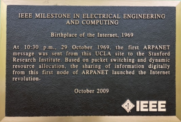

Historia de Internet - Línea del Tiempo
Desde ARPA hasta la era de la nube

Eventos Relacionados
| 1962 - Red Global | 1971 - Email | 1973 - TCP/IP | 1983 - Internet Oficial |
1969 – Nace ARPANETEl 29 de octubre de 1969, a las 22:30 horas, ocurrió uno de los momentos más trascendentales en la historia de la tecnología: el primer mensaje enviado a través de ARPANET. El profesor Leonard Kleinrock y su equipo en la Universidad de California, Los Ángeles (UCLA), intentaron enviar la palabra "LOGIN" a una computadora ubicada en el Stanford Research Institute (SRI), a unos 560 kilómetros de distancia. Los primeros cuatro nodos de ARPANET fueron instalados en: UCLA (septiembre 1969), Stanford Research Institute (octubre 1969), Universidad de California, Santa Barbara (noviembre 1969), y Universidad de Utah (diciembre 1969). Para finales de 1969, estas cuatro instituciones estaban interconectadas, formando la primera red de computadoras de área amplia del mundo. Este pequeño conjunto de computadoras sentó las bases para la explosiva expansión que vendría en las décadas siguientes.  🔗 Fuente: computerhistory.org/internethistory |